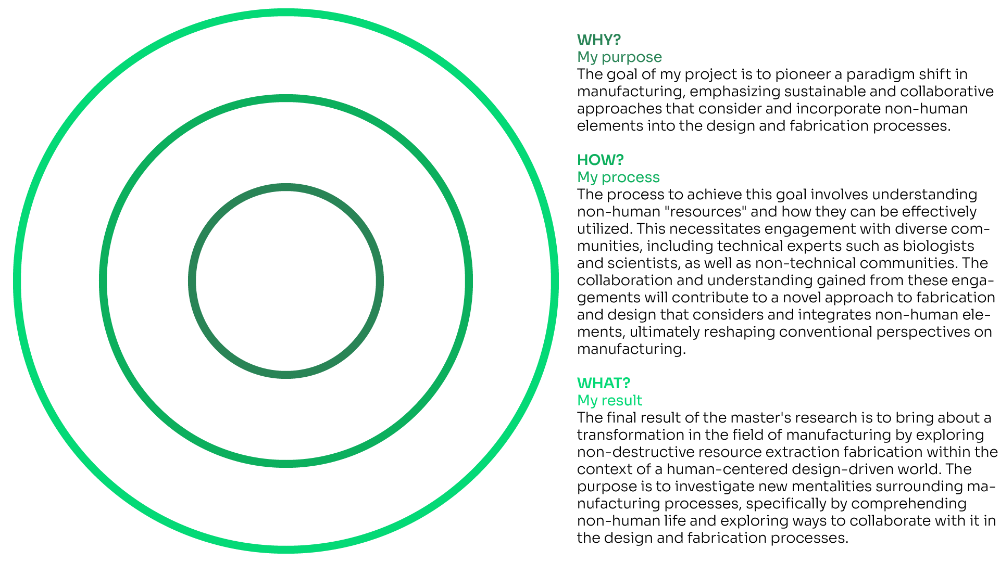
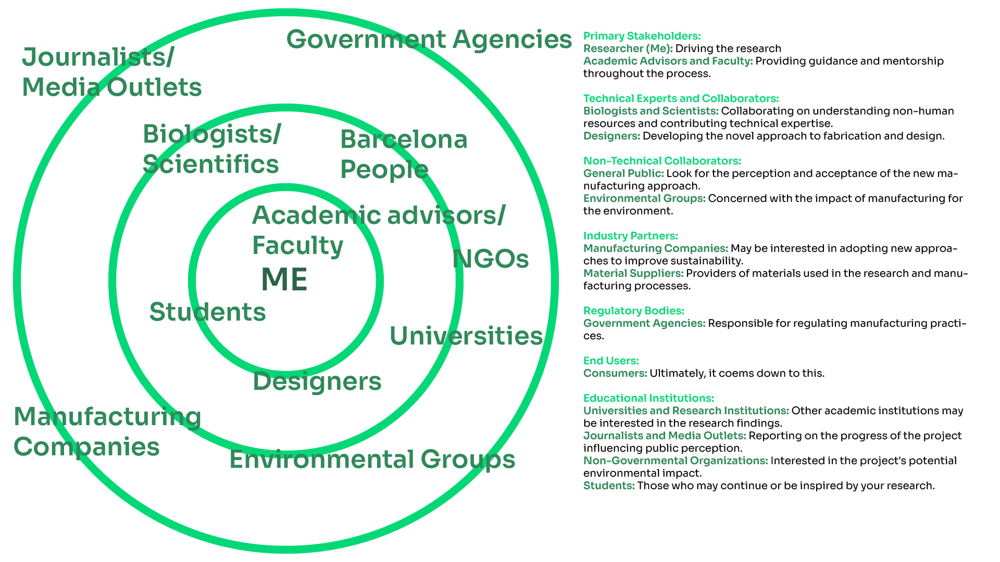

Communicating Ideas 📞
16/01/2024 - 27/02/2024
In our world, ads are everywhere, thanks to how businesses compete and sell stuff in our capitalist system. They use ads to make their products stand out, create strong brands, and convince us to buy things. Ads are all around us—on TV, online, and even in social media. They try to give us info and make us like certain products. As we are part of the system (like it or not) we should make the most out of it by using great communication and promotion of our projects. During this seminar, we will learn how to understand our context, who we are communicating to and how to create a narrative for our project.
16/01/2024
Basic communication models
Communication is like a dance, depending on the context you will do a certain one. There are a few models that can help us understand the steps for each dance. In the "linear" model, it's a one-way street. Add some back-and-forth, and you've got the "interactive" model. The "transactional" model sees communication as a constant dance between people. Then there's the "Shannon-Weaver" model, ensuring your message gets through without a hitch. These models are like guides, helping us navigate conversations and connect with others.
1. Linear Communication:
Imagine talking to someone on the phone. You say something (send a message), and the other person listens (receives the message). It's like a one-way street where information goes from one point to another.
2. Interactive Communication:
Now, let's make it a chat. You talk, the other person replies, and you go back and forth. It's like a tennis match, with both sides actively participating. You also pay attention to the environment and what's happening around you to understand each other better.
3. Talking and Listening Together:
Think of communication like a lively dance. When you talk, the other person not only hears you but also responds. You're both part of the conversation, and it's happening in real-time. This model recognizes that communication is a two-way street with constant back-and-forth.
4. Sending Messages Clearly:
Picture sending a text. You type a message, hit send, and the other person gets it. But sometimes, there might be noise or interference (like a bad connection). The Shannon-Weaver model looks at how to make sure your message gets across without too much disruption.

Alright, so how do I know which model should I use????
Choosing the right communication model for your project is like picking the right tool for the job. There’s a lot of different theories and books that talk about this ("Communication Models" by Joann Keyton, Communication: Principles for a Lifetime" by Steven A. Beebe and Susan J. Beebe, Understanding Media: The Extensions of Man" by Marshall McLuhan) but to make it simpler, I will use a simple guide made for my bachelor’s marketing subject:
1. Know Your Project's Goals:
If you just need to share information plainly, use a simple, one-way "linear" model. For projects where everyone needs to talk and work together, consider an "interactive" or "transactional" model.
2. Understand Your Audience:
Think about who you're talking to. If they like clear and direct messages, a linear model works. If they enjoy conversations and teamwork, go for interactive or transactional.
3. Consider Your Message:
If your message is straightforward, a linear model is fine. For more complex ideas or negotiations, use an interactive or transactional approach.
4. Think About Project Size:
Big projects often need ongoing discussions, so interactive or transactional models are handy. Smaller projects may be fine with a quick, one-way linear talk
5. Check the Time:
Linear communication is faster, while interactive or transactional may take more time due to ongoing discussions.
6. Feedback Matters:
If feedback is crucial, interactive or transactional models naturally include ways for everyone to give their thoughts.
7. Know Your Culture:
Every organization has its own way of communicating. Some like structure (linear), while others enjoy open talks (interactive or transactional).
8. Consider Your Tools:
If you're using digital tools or platforms, interactive or transactional models might fit well.
So, what’s the purpose of it?
Knowing how to communicate your project will help you create your own storytelling for your project. Storytelling is like telling a good story. It's about sharing the project's purpose, challenges, and successes in a way that grabs people's attention. It’s like creating a narrative that not only explains what the project is about but also makes it interesting and relatable. A good project story helps everyone involved understand the journey, the ups and downs, and the lessons learned along the way. It's more than just facts and numbers; it's about connecting with people on a personal level and inspiring them to be part of the project's success story. To achieve this, good communication is key, for that reason it’s important to understand asap the goal of the project to find the most useful communication tools.
Deliverables 1st class
Golden circle
Stakeholders map
